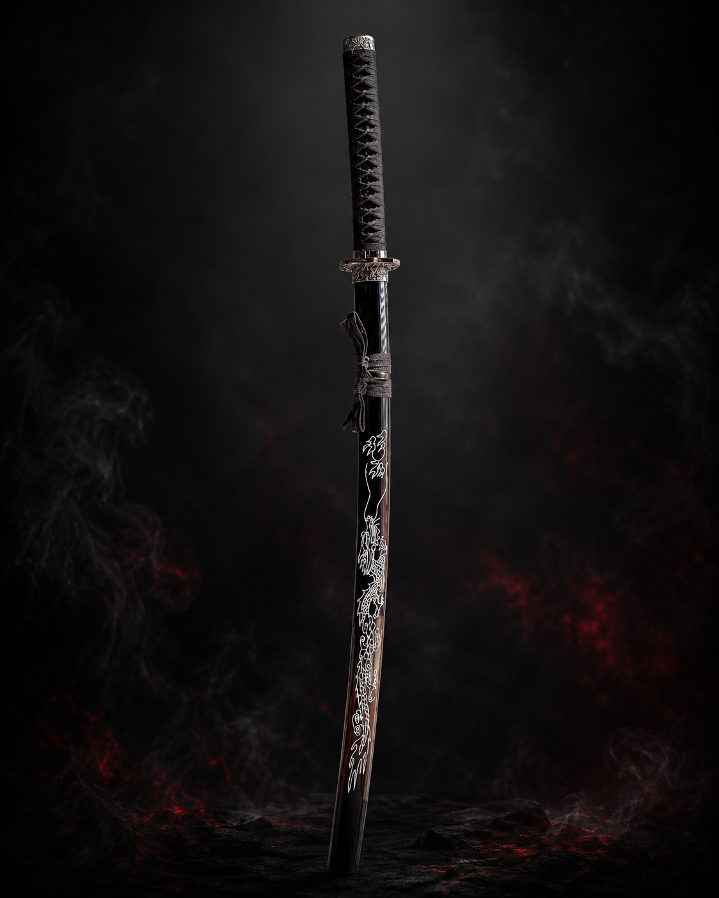
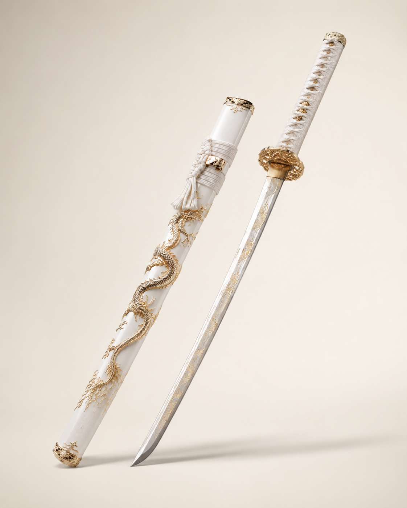

Live 3D focus
The central katana is loaded as a GLB model and reacts to scroll and pointer movement.
3D visual drop · Morocco
A cinematic katana showcase built around motion, atmosphere, and a real web-ready 3D model. Scroll to rotate the blade, switch sides, and explore the Nakama arsenal.
Scroll · 回転
The blade
The central katana is loaded as a GLB model and reacts to scroll and pointer movement.
Dark crimson smoke for Black Dragon. Pearl-and-gold mist for White Dragon.
When the real product photos arrive, drop them into the assets folder without rebuilding the layout.
Inspired by high-end interactive studios: less catalogue, more product universe.
Selected swords
Temporary SVG/product placeholders now. Real product photos later.
One Piece · Zoro
One Piece · Zoro
One Piece · Zoro
Ghost of Tsushima
Bleach
One Piece · Zoro
One Piece · Zoro
One Piece · Zoro
Trafalgar Law
Demon Slayer
Lore
The goal is not only to sell wooden katanas. It is to make the visitor feel like they entered a cinematic anime-inspired universe before they ever message the store.


Order flow
Replace the phone number in `index.html`, add real prices, and swap in real product photos when the owner shoots them.